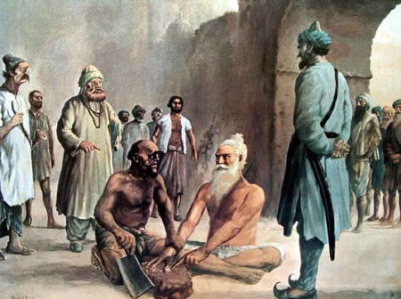

Bhai Mani Singh Shaheed

Bhai Mani Singh Ji was a prominent figure in Sikh history known for his immense
contributions and sacrifices. The information about Bhai Mani Singh Ji can be found in
various historical Sikh texts, including the "Panth Parkash" by Bhai Rattan Singh Bhangu.
Bhai Mani Singh Ji was born in 1644 in the village of Alipur, near the city of Lahore,
in present-day Pakistan. He came from a devoted Sikh family and received his early
education from his father, Bhai Paraga Ji. Bhai Mani Singh Ji later became a student of
Guru Tegh Bahadur Ji, the ninth Sikh Guru. Bhai Mani Singh Ji played a significant role
in the Sikh community and served as a trusted aide to Guru Gobind Singh Ji, the tenth and
final Sikh Guru. He was known for his exceptional knowledge of Gurbani (Sikh scriptures)
and was responsible for transcribing and preserving the teachings of the Gurus.
One of the most notable events associated with Bhai Mani Singh Ji is his involvement in
the compilation of the Guru Granth Sahib, the central religious scripture of Sikhism. He
played a crucial role in gathering and organizing the hymns of the Sikh Gurus and other
saints, ultimately completing the final version of the Guru Granth Sahib in 1705.
Bhai Mani Singh Ji's unwavering devotion and commitment to Sikhism made him a target for
persecution by the Mughal authorities who sought to suppress the growing influence of the
Sikh community. In 1738, during the reign of Emperor Muhammad Shah, Bhai Mani Singh Ji
faced immense challenges when he refused to pay a special tax imposed on Sikhs and
declined to convert to Islam. As a consequence, Bhai Mani Singh Ji was arrested and
brought to Lahore. He was subjected to various forms of torture, including being cut
limb by limb, but he remained steadfast in his faith. On June 24, 1738, Bhai Mani Singh
Ji attained martyrdom, becoming a symbol of Sikh resilience and courage in the face of adversity.
Bhai Mani Singh Ji's life and sacrifices continue to inspire and guide Sikh followers to
this day. His dedication to preserving Sikh teachings and upholding the principles of
Sikhi has left an indelible mark on Sikh history and serves as a testament to the
strength of the Sikh faith.